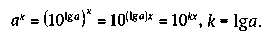
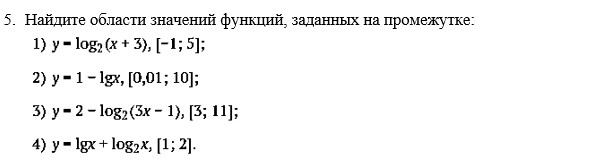

Рассмотрим три переменные x, y и z, связанные зависимостью 
Зафиксируем значение переменной z = a, потребовав, чтобы выполнялись условия a > 0, a ↑ 1. Можно записать связь между двумя остальными переменными в виде . Меняя произвольно x, получим показательную функцию, или экспоненту.
Выразим из этого же соотношения переменную x как функцию от y: x = logay. Меняя y в качестве аргумента, получим логарифмическую функцию.
Если в том же соотношении зафиксировать показатель x = k, то получим
уже знакомую степенную функцию . Еще одну степенную функцию получим, выражая z через
Разумеется, во всех этих переходах надо следить за ограничениями, которые накладываются на переменные. Мы уже это сделали для показательной функции считая, что a > 0, a ↑ 1.
Для логарифмической функции необходимо дополнительно потребовать, чтобы y был положительным, так как и для определения x из соотношения нужно, чтобы y был больше 0.
Подумайте самостоятельно, какие ограничения нужно наложить на переменные для рассмотрения степенных функций.
Свойства и графики показательной функции
- область определения: множество всех действительных чисел R;область определения: множество всех действительных чисел R;
-монотонность: при a > 1 функция возрастает, при 0 < a < 1 — убывает;
-положительность: значения функции положительны;
-область значений: все положительные числа, т. е. интервал

-Область определения:x>0;
-Промежутки постоянного знака:
-монотонность: функцияпри a > 1 возрастает на всей области определения, при 0 < a < 1 — убывает;
-область значений: множество всех действительных чисел R.
Зачем нужны показательные и логарифмические функции?
1. Примеры различных процессов, которые описываются с помощью показательных и логарифмических функций. Два примера — полет ракеты переменной массы и звукоизоляция стен — были рассмотрены на предыдущем занятии.
-радиоактивный распад
Изменение массы радиоактивного вещества происходит по формуле где m0 — масса вещества в начальный момент t = 0; m — масса вещества в момент времени t; k — некоторая константа (период полураспада).
-Увеличение численности населения
Изменение численности населения в стране на небольшом отрезке времени с хорошей точностью описывается формулой где N0 — число людей при t = 0; N — число людей в момент времени t; a — некоторая константа.
По аналогичной формуле вычисляется изменение числа особей в популяциях животных при определенных условиях (например, когда достаточно пищи и нет внешних врагов).
-барометрическая формула
Давление воздуха убывает с высотой (при постоянной температуре) по закону где p0 — давление на уровне моря (h = 0); p — давление на высоте h; H — некоторая константа, зависящая от температуры. При температуре 20 °С H + 7,7 км.
Роль основания a
Нужно ли рассматривать показательные и логарифмические функции при различных основаниях a?
На самом деле достаточно было бы ограничиться одним основанием, например, взяв a = 10. Действительно,

По формуле перехода к другому основанию получим
Поэтому вместо функций видаможно рассматривать функции с одним
и тем же основанием, но с коэффициентом при значении аргумента:
 Аналогично и для логарифмических функций достаточно было бы
рассматривать функции с фиксированным основанием,
но с коэффициентом при значении функции: y = k lgx.
Аналогично и для логарифмических функций достаточно было бы
рассматривать функции с фиксированным основанием,
но с коэффициентом при значении функции: y = k lgx.
Некоторые основания a играют особую роль:
-a = 10 (десятичный логарифм). Поскольку мы записываем числа в десятичной системе счисления, запись числа в виде помогает понять порядок числа A. Заметим, что для натурального числа A число [lgA] + 1 показывает число цифр в десятичной записи числа A ([a] обозначает целую часть числа a);
-a = 2 (двоичный логарифм). В информатике используется двоичная система счисления;
- a = e (натуральный логарифм). Это число названо в честь Л. Эйлера, оно иррационально и приблизительно равно 2,7.
Таблица логарифмов
Вопросы и задания
